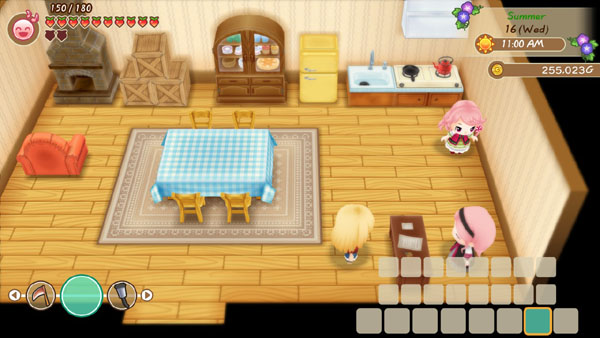

Tienda avícola de la ciudad Mineral



Lillia se encarga del mostrador principal de PoPoultry, mientras que Rick y Popuri ayudan a cuidar de su ganado de pájaros y conejos. Su tienda está abierta de 11:00 a 16:00 horas y cierra los domingos. Es posible que la puerta de la tienda se cierre con llave después del evento aleatorio El amor de un niño. La puerta se desbloqueará nuevamente al día siguiente en que la tienda esté abierta.
| Horas | 11:00 am a 4:00 pm. |
|---|---|
| Cerrado | Domingos. |
| Dirigido por |
|
Productos
comprar animales
| Animal | Disponibilidad | Costo |
|---|---|---|
| Gallina | Comienzo del juego. | 1.500 G |
| Gallina marron | Comienzo del juego. | 1.500 G |
| Conejo lanudo | Comienzo del juego. | 3.000 G |
Nota: Tanto las gallinas como las gallinas marrones ponen el mismo tipo de huevos. El color de la gallina es básicamente una diferencia visual entre las dos aves.
Productos para animales
| Animal | Disponibilidad | Costo |
|---|---|---|
| Alimento para pollos y conejos | Comienzo del juego. | 10 G |
| Kit de cría de conejos | Comienzo del juego. | 2.000 G |
Si bien puedes comprar los kits de cría en cualquier momento, el gallinero debe actualizarse en el taller de Gotts para agregar un corral de cría de conejos al granero. Los conejos de angora necesitan tener su pelaje para que el kit sea efectivo.